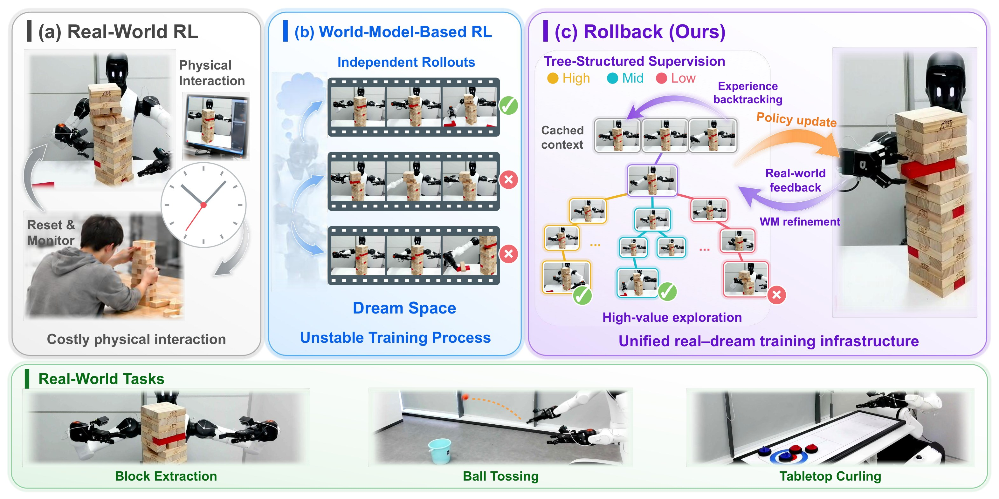
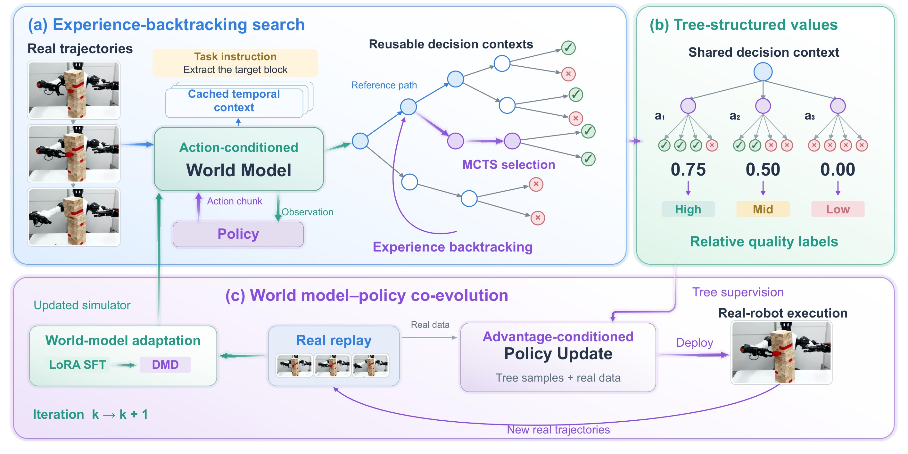
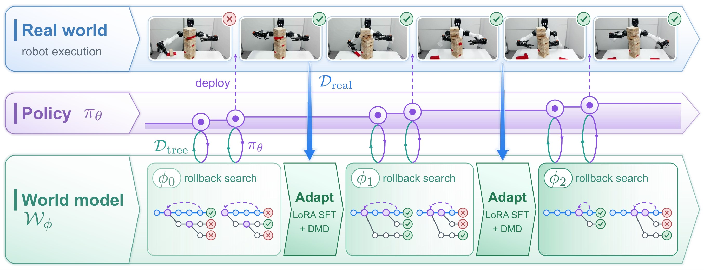

Existing world-model-based methods treat world models as forward-only surrogates of the physical environment. Rollback turns them into counterfactual engines: it rolls back to critical decision points, branches into alternative actions, and contrasts their outcomes to attribute success to individual decisions. This concentrates imagination where it matters most and distills counterfactual outcomes into fine-grained, action-level supervision without a separately learned value model. A training system that unifies distributed world-model search with asynchronous real-robot execution closes the loop: real-world experience sharpens the world model, and a sharper world model drives further policy improvement.

Final Rollback policies running on the real robot, recorded from a third-person view.
Starting from real trajectories, restore cached world-model contexts and branch into alternative action chunks. MCTS concentrates the imagination budget on decisions whose alternatives diverge.
Siblings share a decision context, so contrasting their subtree outcomes isolates the effect of each action, yielding action-level labels without a learned value model.
The robot keeps collecting real experience asynchronously; it refines the world model, which in turn provides more faithful imagination for the next round.


All clips below are generated by the world model. From one restored context, Rollback branches into sibling actions and rolls each out to its outcome. Comparing siblings tells the policy which decision made the difference.
PSNR over 40 open-loop rollouts. The reward model flags none of the 40 replayed failures as success.
Real-world success rates (%). All methods start from the same π0.5 initialization; RISE is reimplemented with our world model for a fair comparison.
Three human players perform each task by hand under the same initial positions and success criteria. Although Rollback starts from teleoperated demonstrations far below human level, it surpasses the human average on both tasks.